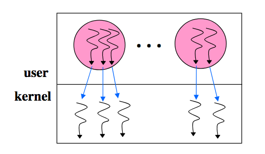

"Scheduler Activations: Effective Kernel Support for the User-Level Management of Parallelism"
Problem
-
User-level library
- Management in application's address space
- High performance and very flexible
- Lack functionality
-
Operating system kernel
- Poor performance (compared with user-level threads)
- Poor flexibility
- High functionality
How to design a parallelism mechanism (e.g., kernel interface + use-level thread package) that combines the functionality of kernel threads with the performance and flexibility of user-level threads?
Background
Theme for supporting concurrent and parallel programming
- Conform to application semantics
- Respect priorities of applications
- No unnecessary blocking
- Fast context switch
- High processor utilization
"Heavyweight" Process Model
-
Pros:
- Simple, uni-threaded model
- Security provided by address space boundaries
-
Cons:
- High cost for context switch
- Coarse granualarity limits degree of concurrency
"Lightweight" User-level Threads
-
Pros:
- Thread semantics defined by application: different applications can be linked with different user-level thread libraries
- Fast context switch time: within an order of magnitude of procedure call time
- No kernel intervention (i.e., high performance)
- Good scheduling policy flexibility: done by the thread lib
-
Cons:
- Unnecessary blocking: A blocking system call, I/O, page faults, and multiprogramming block all threads (i.e., lack of functionality)
- System scheduler unaware of user thread priorities
- Processor under-utilization (i.e., Hard to run as many threads as CPUs) because: Don't know how many CPUs; Don't know when a thread blocks
Kernel Threads

-
Pros:
-
No system integration problems (system calls can be blocking calls) (i.e., high functionality)
- Handle blocking system calls/page faults well
-
Threads are seen and scheduled only by the kernel
-
-
Cons:
- Adds many user/kernel crossings (i.e., low performance) (e.g., thread switch, create, exit, lock, signal, wait, ...)
- Typically 10x-30x slower than user threads
- Every thread-related call traps: etra kernel trap and copy and check of all parameters on all thread operations
- Single, general purpose scheduling algorithm (i.e., lack of flexibility)
- Thread semantics defined by system
- Context switch time better than process switch time by an order of magnitude, but an order of magnitude worse than user-level threads
- System scheduler unaware of user thread state (e.g., in critical section) leading to blocking and lower processor utilization
- Adds many user/kernel crossings (i.e., low performance) (e.g., thread switch, create, exit, lock, signal, wait, ...)
User-level threads multiplexed on kernel threads
- Question: Can we accomplish system integration by implementing user-level threads on top of kernel threads?
-
No:
- Different apps have different needs (thread priorities, etc)
- Insufficient visibility between the kernel and user thread library
- Kernel doesn't know best thread to run
- Kernel doesn't know about user-level locks, priority inversion (preempt while in critical section): too much info changing too quickly to notify kernel
- kernel events (preemption, I/O) invisible to user library (user thread blocks, then kernel thread serving it also blocks)
- Kernel threads are scheduled obliviously w.r.t user-level thread library
- Hard to keep same number of kthreads as CPUs
- Neither kernel nor user knows how many runnable threads
- User doesn't even know number of CPUs available
- Can have deadlock
System Design
-
Key problem:
- Application has knowledge of the user-level thread state but has little knowledge of or influence over critical kernel-level events (this is by design to achieve the virtual machine abstraction)
- Kernel has inadequate knowledge of user-level thread state to make optimal scheduling decisions
- Kernel may de-scehdule a thread at a bad time (e.g., while holding a lock)
- Application may need more or less computing
-
Solution:
- A mechanism that facilitates exchange of information between user-level and kernel-level mechanisms
Note
A general system design problem: communicating information and control across layer boundaries while preserving the inherent advantages of layering, abstraction, and virtualization.
- What is a SA?
- Execution context for running user-level threads
- Notifies the user-level thread system of kernel event
- Provides space for the kernel to save processor context
Note
A scheduler activation is the execution context for vectoring control from the kernel to the address space on a kernel event. The address space thread scheduler uses this context to handle the event, e.g., to modify user-level thread data structures, to execute user-level threads, and to make requests of the kernel.
- Scheduler Activations (SA) structure
-
SA basics
- Multi-threaded programs given an address space (as usual)
- Facilitate flow of key information between user space and kernel space
- Kernel explicitly "vectors" kernel events to the user-level thread via SA
- Extended kernel interface for processor allocation-related events
- User-level thread library notifies the kernel about events
- Kernel uses the SA itself to do the same
- SA has two execution stacks
- The kernel stack - used by the user-level thread when running in the kernel mode (e.g., system call)
- The user stack - used by the user-level thread scheduler
- Each user-level thread is given a separate stack so that the thread scheduler can resume running if a user-level thread blocks
- The kernel-level SA communicates with the user-level library by upcalls
- When must kernel call into user-space? (Table II)
- New processor available
- Processor had been preempted
- Thread has blocked
- Thread has unblocked
- When must user call into kernel? (Table III)
- Need more CPUs
- CPU is idle
- Preempt thread another CPU (for higher priority thread)
- Return unused SA for recycling (after user-level thread system has extracted necessary state)
- SA role: there is one running SA for each processor assigned to the user process
-
SA lifecycle
-
On program start:
- New SA is created, assigned a processor and "upcalled" (fixed entry point)
- User-level thread scheduler initializes and runs on this SA
-
Kernel uses SA to notify the user-level about important events: preemption, I/O, page faults
-
-
Avoiding effects of blocking
- Resume blocked thread
- I/O request/completion
-
Responsibility division between kernel and application address space:
- Processor allocation (the allocation of processors to address space) is done by the kernel.
- Thread scheduling (the assignment of an address space's threads to its processors) is done by each address space.
- The kernel notifies the address space thread scheduler of every event affecting the address space.
- The address space notifies the kernel of the subset of user-level events that can affect processor allocation decisions.
-
SA vs. kernel threads key differences
- Preempted threads never resumed by the kernel directly (rather, indirectly through an SA)
- A traditional kernel:
- Directly resumes the kernel thread
- Does NOT notify the user-thread about preemption
- Does NOT notify the user-thread about resumption
-
Critical section
-
Problem: threads preempted while holding a lock, which can lead to deadlock
- User-level thread holds lock on the program's ready list
- Gets preempted
- Thread scheduler tries put that thread in the ready list on SA upcall
-
Use recovery (recover when it does)
- Thread scheduler checks to see if the thread was executing in a critical section
- If so, the thread is continued temporarily via a user-level context switch. When the continued thread exits the critical section, it relinquishes control back to the original upcall, again via a user-level context switch.
-
-
Others
- Page faults must be handled carefully: the kernel must notify the program of a page fault only when the page fault is serviced
- User-level thread after blocking might still execute in kernel (e.g., I/O completing): the kernel notifies the user-level only after the user thread is in a "safe" point
- Every SA needs a processor to do the up-call on: at time T3 of I/O image, when I/O completes, kernel must notify the user-level thread of the event via SA, and this notification requires a processor
- Application free to build any concurrency model on SAs